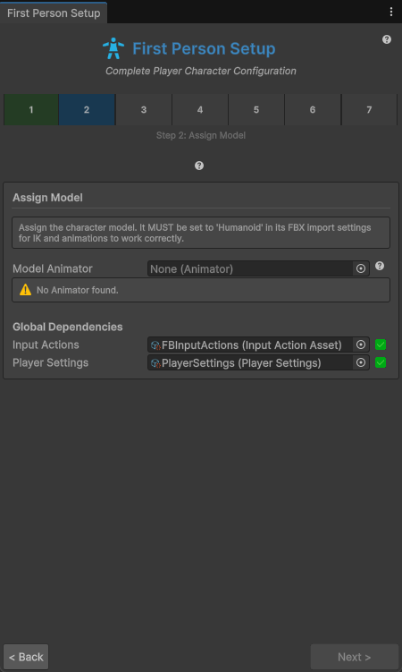
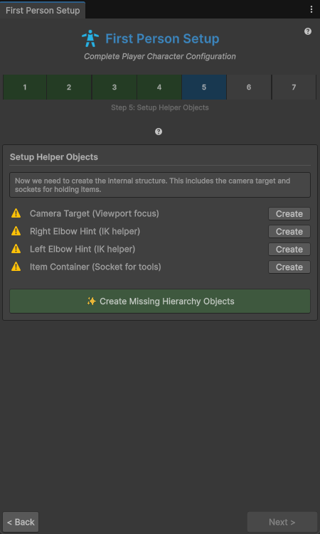

Guide
Setup Wizard
Turn your own Humanoid character into a first-person full-body player. The Setup Wizard adds the components, creates the helper objects, wires every reference and runs a health check. You work through seven steps and cannot skip ahead while a step is incomplete.
On this page
Before you start#
- A URP project on Unity 6000.5 or newer. See Requirements.
- Your character imported as Humanoid: select the model FBX, set to Humanoid, then click Apply.
- The character inside your scene, not as a prefab asset. Drag it into the scene first.
Open the wizard with . Use Next > and < Back to move between steps, and Finish Setup on the last step.
Step 1: Select Player Root#
- Drag an existing GameObject from the scene into Player Root, or click Create New Player Root.
- The button creates an empty GameObject named
PlayerCharacterat the origin and selects it.
The root holds the movement and camera logic. Your model becomes a child of it. The step is complete when the root is a scene object.
Step 2: Assign Model#
- Check that Model Animator is filled. The wizard finds the first
Animatorbelow the root automatically. Drag another one in if needed. - Confirm the message Humanoid model verified. A non-humanoid Animator shows an error and blocks the next step.
- Under Global Dependencies, check Input Actions (click Search if it is empty; the wizard looks for
FBInputActions) and Player Settings (click Create to make a newPlayerSettingsasset).

Step 3: Find Bones#
- Click Auto-Detect Bones. The wizard reads the Humanoid avatar and fills three fields.
- Check the fields. Only Head (Viewpoint Focus) is required to continue. Spine (Body Balance) and Right Hand (Item Socket) show a warning until they are set.
Override any field by dragging a bone from the Hierarchy. Bones are only referenced, never created. The right hand becomes the parent of the item container in step 5.
Step 4: Add Player Scripts#
This step adds the components. Each row shows whether the component exists and has an Add button. Click Add All Required Scripts to add everything in the root and model lists at once.
| Object | Components |
|---|---|
| Player root | PlayerController, CharacterController, PlayerInputHandler, PlayerLocomotion, PlayerCameraController, PlayerAnimatorController, HandItemSocket, ItemSwitcher |
| Model (the object with the Animator) | PlayerHeadIK, PlayerHandIK, PlayerSpineStabilizer, PlayerFootPlanting, HandPoseController |
The wizard only requires the root components plus head, hand and spine IK to continue. PlayerFootPlanting and HandPoseController are recommended. The button adds them too, so remove them if you do not want them.
Three demo components are listed separately: PlayerInventory, PlayerInteraction and PlayerDropSystem. They are not needed for a clean player. The wizard does not add PlayerFootsteps or PlayerVitals; add them by hand (see Footsteps and Vitals).
Step 5: Setup Helper Objects#
This step creates the objects the components expect. Click Create Missing Hierarchy Objects, or use the Create button on each row.
- Camera Target: child of the root at local position (0, 1.6, 0). The camera follows it.
- Right Elbow Hint and Left Elbow Hint: children of the root at (0.3, 1.2, −0.2) and (−0.3, 1.2, −0.2). They guide the elbows of the hand IK.
- Item Container: child of the right hand bone, with an
ItemContainercomponent. Without a detected right hand, it is created under the model instead.
Next becomes available when the camera target, both elbow hints and an ItemContainer exist below the root.

Step 6: Connect Everything#
- Click Connect All Systems. The wizard fills every reference field. You do not need to drag anything.
The connections it makes:
PlayerInputHandlergets theFBInputActionsasset.PlayerControllergets the player settings and all subsystems: input, locomotion, camera, animator, head, hand, spine, foot planting and the item socket.PlayerCameraControllergets the head bone and the Camera Target.PlayerLocomotiongets the Camera Target as its camera transform.HandItemSocketuses the right hand bone as its socket.PlayerHandIKgets both elbow hints.ItemContainergets the hand socket, andItemSwitchergets the container.- Demo components, if you added them in step 4, are wired as well.
Run this step again after you change the hierarchy. It is safe to repeat.
Step 7: Final Health Check#
- Click Run Health Check.
- Fix every error (red). Use Fix next to an issue, or select the player with Select Player in Scene and fix it by hand.
- Click Finish Setup. It is enabled when no errors remain. Warnings do not block it.
The same validator runs from the PlayerController Inspector (Perform Manual Health Check and FIX ALL ISSUES). Each message and its fix is listed in Health check messages.
Press Play after the health check. Walk, sprint, crouch and equip an item. If something does not behave as expected, check the troubleshooting page.
Transfer Configuration#
Use to move the tuning of a finished player to a new character. You do not re-tune IK, camera, locomotion or items.
- Click 1. Setup Target Structure (opens Setup Wizard). The wizard opens with the target root, model, input actions and player settings filled in. Run its steps as described above.
- Click 2. Copy Tuning + Add Missing Items. With Create missing items from source prefabs switched off, the button reads 2. Copy Tuning (Existing Items Only).
What is copied:
- The tuning values of
PlayerHandIK,PlayerHeadIK,PlayerCameraController,PlayerLocomotion,PlayerAnimatorControllerandHandItemSocket. - For each item: its item id, world item prefab and attachment (IK and grip) data.
- Missing items from the source's prefabs are added under the target
ItemContainer, inactive. Existing target items are reused and nothing is deleted. - The
PlayerSettingsasset is shared, not copied.
Bones and references are never copied. The wizard detects them again on the target rig.
Items that exist only in the source scene are skipped, and the tool shows a warning. Save them as prefabs first if you want them copied.
Common pitfalls#
Step 1 rejects a prefab asset. Drag the prefab into the scene and use the instance.
A non-humanoid model stops the wizard at step 2, because the IK and the animations need a Humanoid avatar. Change the Animation Type to Humanoid and click Apply.
The body IK runs in the Animator's IK pass. The shipped Player.controller has it enabled. If you use your own controller, open the Animator window, choose Layers, open the gear menu and enable IK Pass.